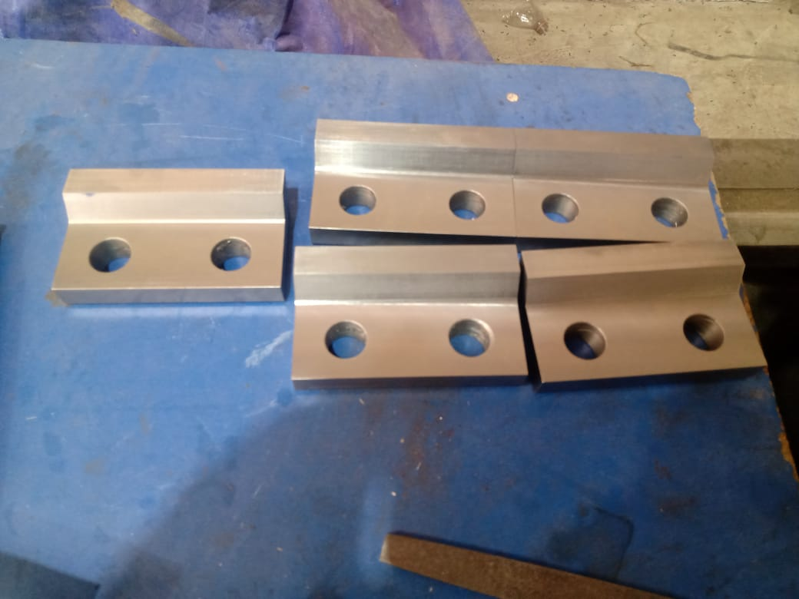
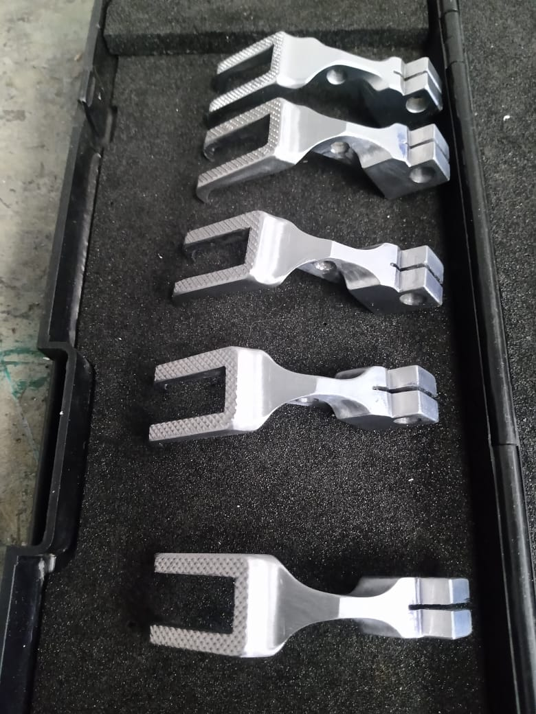
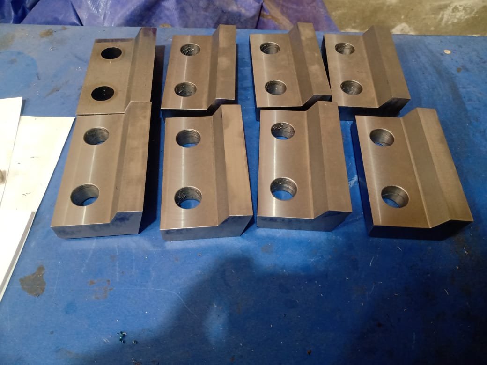
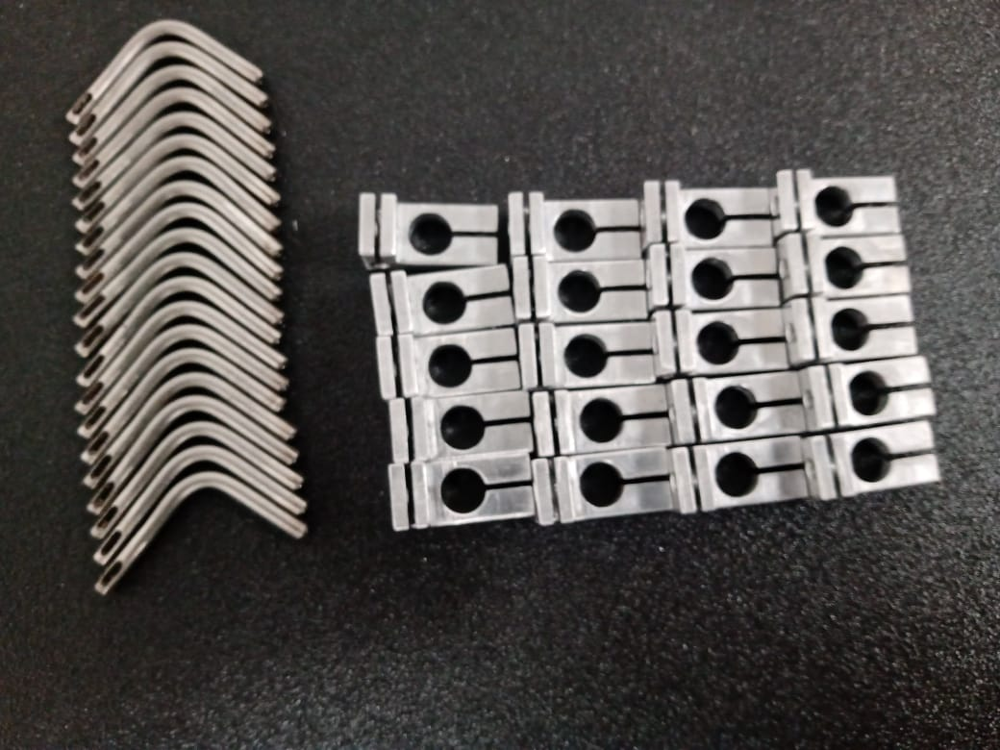
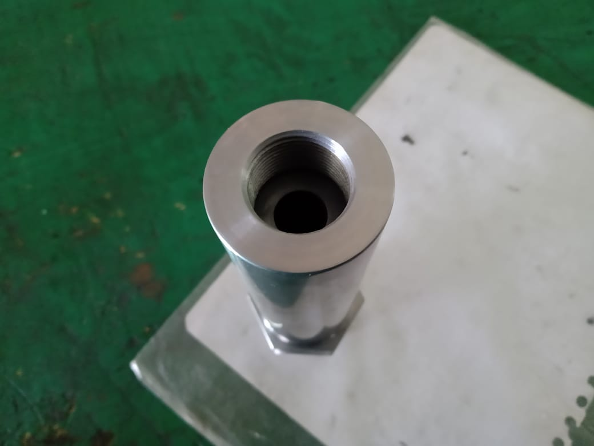
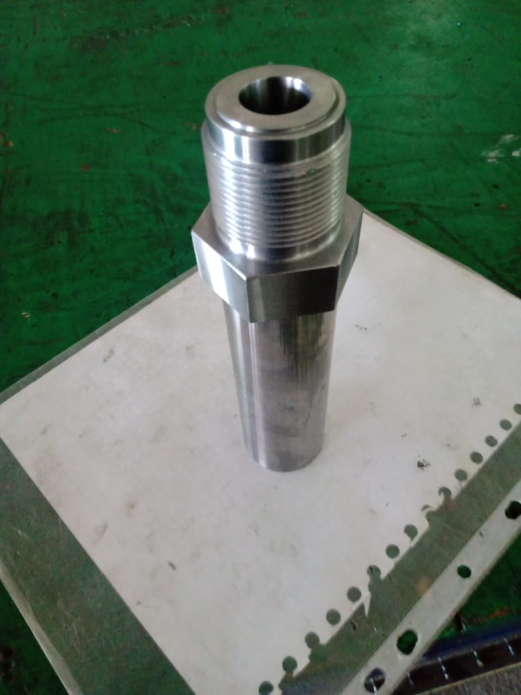
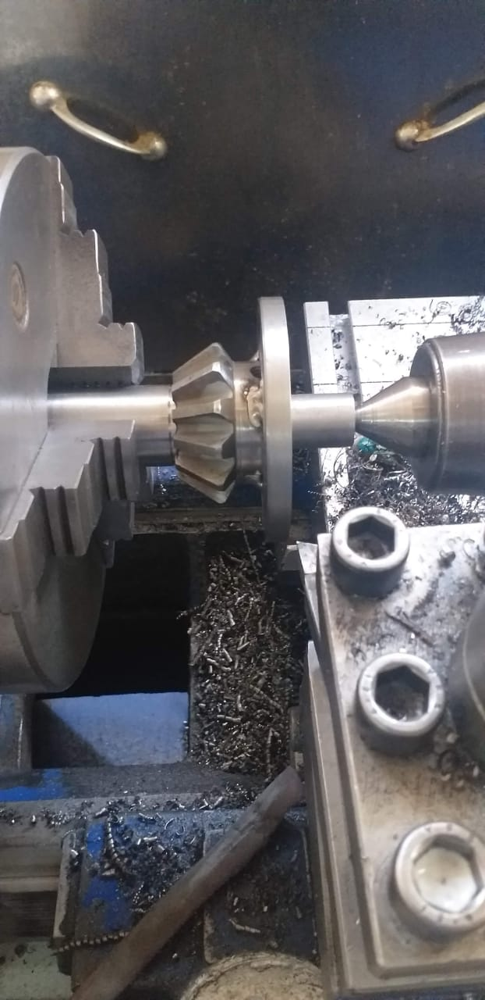
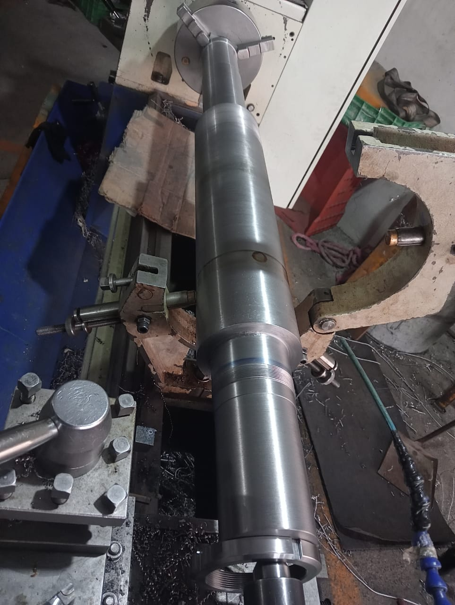
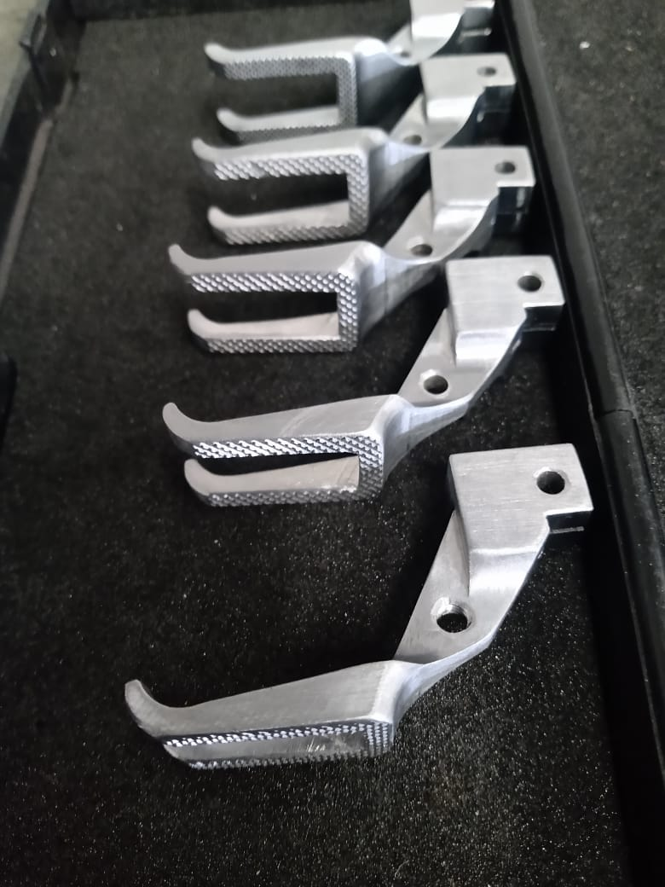
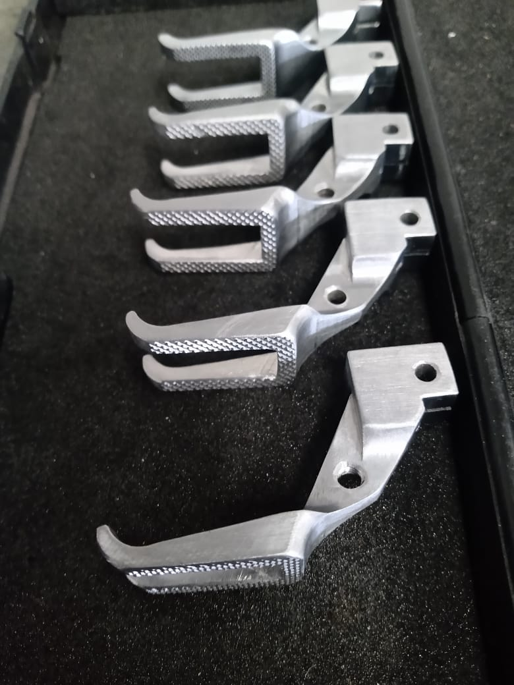

Nuestros Servicios y Ejemplos de Trabajo Realizado
En Maquinados Industriales Juárez, estamos comprometidos con brindar soluciones personalizadas y de alta precisión en la industria de maquinados. Gracias a nuestra infraestructura y a nuestro equipo técnico especializado, hemos desarrollado una amplia gama de proyectos que ejemplifican nuestra capacidad para adaptarnos a los desafíos de nuestros clientes.
A continuación, algunos ejemplos de los servicios que ofrecemos y los trabajos realizados:
-
Piezas de Alta Precisión
Fabricamos piezas complejas y de precisión para la industria automotriz. Nuestro equipo de maquinaria avanzada garantiza un acabado perfecto y especificaciones precisas, ideales para aplicaciones que requieren altos estándares de calidad.
-
Fabricación de Componentes Personalizados
Diseñamos y fabricamos componentes personalizados según las necesidades específicas de cada cliente. Desde prototipos hasta producciones en serie, adaptamos cada proyecto con procesos eficientes y control de calidad riguroso.
-
Maquinados en Series Pequeñas y Grandes
Realizamos maquinados en series pequeñas y grandes con la misma dedicación a la calidad y la eficiencia. Nuestros procesos están optimizados para ofrecer resultados consistentes, independientemente del volumen de producción.
-
Servicios de Mantenimiento y Reparación de Piezas Industriales
Ofrecemos mantenimiento y reparación de piezas industriales, prolongando su vida útil y asegurando el óptimo funcionamiento de sus equipos.
Estos ejemplos son solo una muestra de las soluciones que podemos brindarle. Si su empresa requiere un servicio específico o desea conocer más sobre nuestras capacidades, estaremos encantados de asesorarle y adaptar nuestros servicios a sus necesidades.
        

Maquinados Industriales Juárez SU ALIADO EN CALIDAD Y PRECISIÓN.